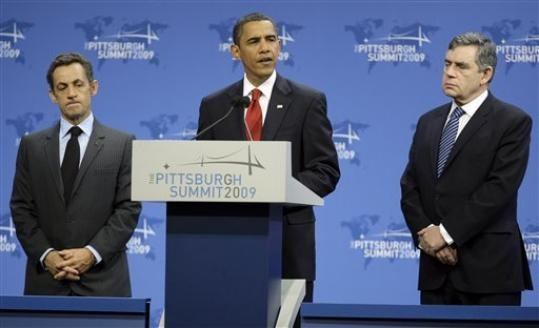
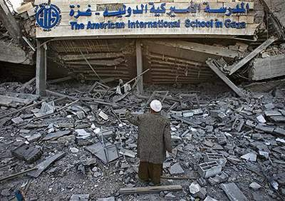

2009-09-27 08:00
The mainstream media and right-wing blogosphere is filled with strange theories about Iranian plans to destroy Jews in some variant of a nuclear “Final Solution.” What’s frightening is that the same people who spread this nonsense are the ones that got us into Iraq. And the ones who believe these lies are the same ones who claimed that the Iraqis were responsible for 9/11. And when we listen to a Khadafy or an Ahmadinejad at the UN, their words make no sense to Western diplomats — if they stay to listen to these speeches at all.
Lost amid the religious verbiage, hate of Israel’s Apartheid form of government, posturing for the rest of the Muslim world, and their downright quirkiness, both Khadafy and Ahmadinijad have nevertheless been delivering a consistent, coherent message to Western nations of the Security Council: Your time is up and we’re tired of playing by your rules. For its part, the West has also been delivering a message: Nothing has changed. The world is still ours. This was certainly the case in New York and Pittsburgh this week.
In his rambling, extemporaneous speech at the UN, Moammar Khadafy slammed the notion of privileged Western nations leading the Security Council:
[The Security Council] is political feudalism for those who have a permanent seat. […] It should not be called the Security Council, it should be called the terror council. […] Permanent is something for God only. We are not fools to give the power of veto to great powers so they can use us and treat us as second-class citizens.
An even more reviled speaker in Western eyes, Mahmoud Ahmadinijad, made the same points more lucidly in his speech:
It is not acceptable that the United Nations and the Security Council, whose decisions must represent all nations and governments by the application of the most democratic methods in their decision making processes, be dominated by a few governments and serve their interests. In a world where cultures, thoughts and public opinions should be the determining factors, the continuation of the present situation is impossible, and fundamental changes seem to be unavoidable.
[…] Marxism is gone. It is now history. The expansionist Capitalism will certainly have the same fate. […] We must all remain vigilant to prevent the pursuit of colonialist, discriminatory and inhuman goals under the cover of the slogans for change and in new formats. The world needs to undergo fundamental changes and all must engage collectively to make them happen in the right direction, and through such efforts no one and no government would consider itself an exception to change or superior to others and try to impose its will on others by proclaiming world leadership.
Ahmadinejad took aim at Israel, likening the slaughter of civilians in Gaza to “genocide”:
How can the crimes of the occupiers against defenseless women and children and destruction of their homes, farms, hospitals and schools be supported unconditionally by certain governments, and at the same time, the oppressed men and women be subject to genocide and heaviest economic blockade being denied of their basic needs, food, water and medicine.
This was apparently too much for France and the United States to bear. “It is disappointing that Mr. Ahmadinejad has once again chosen to espouse hateful, offensive and anti-Semitic rhetoric,” Mark Kornblau, a spokesman to the US mission to the UN, said in a statement. Right on queue, 13 Western nations then walked out of a speech that covered much more ground than Israel.
Between New York and Pittsburgh, backroom meetings at the Waldorf-Astoria involving the U.S., Britain, France, Germany, Russia and Israel, the Obama administration has been busy. Busy swatting down the Goldstone report, abandoning serious demands on settlements, and engaging in war frenzy to either impose more sanctions on Iran, or support bombing it, on behalf of Israel. When Obama came to the podium, he enumerated four main themes in a “new” American relationship to the rest of the world:
First, we must stop the spread of nuclear weapons, and seek the goal of a world without them. […] Because a world in which IAEA inspections are avoided and the United Nation’s demands are ignored will leave all people less safe, and all nations less secure.
That brings me to the second pillar for our future: the pursuit of peace. […] That effort must begin with an unshakeable determination that the murder of innocent men, women and children will never be tolerated.
Third, we must recognize that in the 21st century, there will be no peace unless we take responsibility for the preservation of our planet. […] We will press ahead with deep cuts in emissions to reach the goals that we set for 2020, and eventually 2050.
And this leads me to the final pillar that must fortify our future: a global economy that advances opportunity for all people. […] In Pittsburgh, we will work with the world’s largest economies to chart a course for growth that is balanced and sustained.
Yet when we parse the Obamaspeak and compare it to the President’s actual actions this week and this month, all the flowery speech rings hollow. Nothing has changed. The world order will remain the same.

Rather than the global or regional non-proliferation he spoke of, Obama’s actual non-proliferation consists of: No nukes for Iran. North Korea, a much more terrifying nuclear power ruled by an unhinged despot who has actually killed millions of his own citizens and whose nation has already tested nuclear weapons, merits a mere “tsk tsk” from the President. While Israel and the United States have staged simulated war exercises against Iran, Iran has not threatened Israel and no Iranian weapons testing has been detected. But Israel and/or the US are on the verge of attacking Iran militarily solely because Israel, our proxy in the region, fears losing its nuclear monopoly.

The pursuit of peace, particularly the claim that the murder of innocent civilians will never be tolerated, becomes another one of the President’s hollow high school valedictory speeches when measured against his own administration’s promise to torpedo the UN’s Goldstone report and prevent Israeli war crime charges from ever reaching the Hague. Of course, the United States could someday find itself in the same position as Israel, given Abu Ghraib, Guantanamo, illegal renditions, assassinations, waterboarding, drone bombings, and the use of mercenaries in Iraq, Pakistan, Afghanistan, and elsewhere. So perhaps avoiding the Hague is just American pragmatism. But for a country winding up one war in Iraq, escalating another in Afghanistan, and rattling drums for a third in Iran, the “pursuit of peace” is Orwellian Newspeak.
The last two themes, global warming and globalism, don’t inspire confidence either. Neither the President nor I will be around in 2050 when emission levels are low enough to do any good, and I wonder how much of the planet will be. As for global prosperity, Obama seems to offer a view that opportunity in the developing countries will be linked to sustained, balanced growth in the traditional industrialized nations. Did no one else hear anything new? Globalism and Capitalism have failed. Oratory won’t change the facts.
Even though we might not share the Libyan president’s taste in clothing or the Iranian president’s mock Holocaust denial, you’ve got to admit: the UN Security Council is an anachronistic body. It’s 1948 in a time warp. It still consists of the colonial powers who made such a mess of the Middle East right after WW2, and they’re still trying to set the rules, still reminding everyone that the Security Council is theirs, and that they control memberships in the nuclear club. And, with the exception of China, an old White Boy’s club at that.
But out with the old and in with the new. Two of the permanent members, France and Britain (each scarcely over 60 million) have insignificant populations compared to Indonesia or Pakistan (both Muslim states), India, Bangladesh, Nigeria, Japan, Mexico, or Brazil — all of which have populations over 100 million and two of which are also nuclear states. At least two of these would be better candidates for permanent memberships on the Security Council.
So Khadafy and Ahmadinejad’s arguments really shouldn’t come as a surprise in a world that has changed greatly since 1948. These two leaders may not be the most accessible to Westerners, but they have been echoing the sentiments of many of the 187 other nations of the UN whose views are routinely ignored or vetoed by present members of the Security Council.
The Goldstone report is a case in point.
The report, commissioned by the UN, condemns Israeli and Hamas crimes against civilians during Operation Cast Lead last winter. Aside from various ad hominem attacks on Judge Goldstone, himself a Zionist Jew, no one has seriously attacked its actual findings. The only issue that the US, France, and Britain have with the report is that the investigation was not initiated with their blessings. Hence, in UN Ambassador Susan Rice’s words: no mandate. Apparently the rest of the world did not agree. Yet the US will very likely veto the transmission of the findings to the Hague.
Iran’s nuclear program also illustrates the same point.
In the Sixties a handful of Western nations were instrumental in providing Israel with nuclear weapons: the US, France, and Norway all played various parts. The United States has played a game for decades of pretending Israel has no nuclear weapons, and the other members of the Security Council have played along. When the Shah of Iran was in power, the United States and Germany actually helped Iran develop nuclear power. But now with an Iranian government that no longer takes orders from the West, the rules were simply changed.
When the world is yours, you can do what you want.